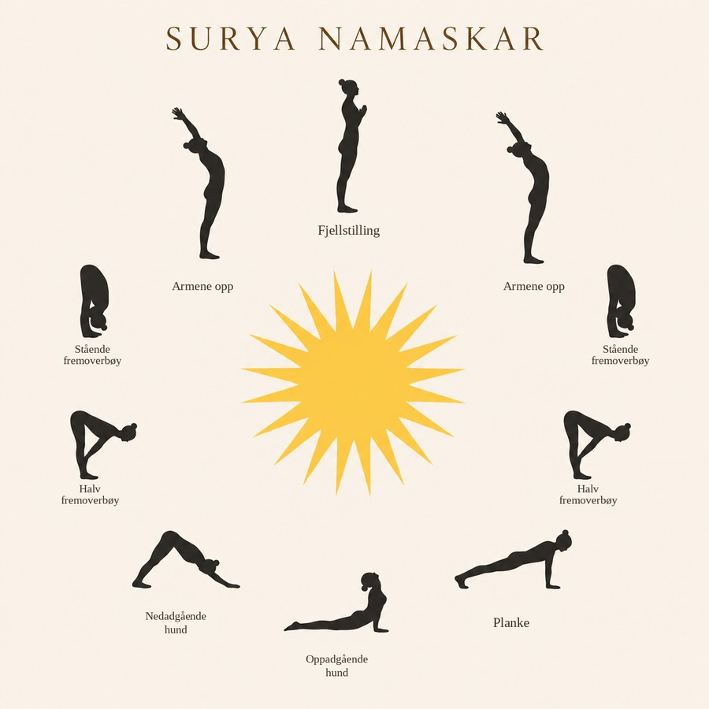

Den klassiske solhilsen fra yoga (Surya Namaskar) — en flytende sekvens av 12 øvelser knyttet sammen med pusten.
Solhilsen er min personlige favoritt her. Jeg kjenner hvordan hele kroppen min våkner når jeg beveger meg gjennom den — pust for pust, ledd for ledd. Å få gjøre den utendørs tidlig en morgen, med sola varmende rett imot, oppleves for meg som noe av det mest helende jeg vet.
— Silje MereteSolhilsen er en fast rekke med 12 yogastillinger som flyter over i hverandre, der hver bevegelse følger et inn- eller utpust. Tradisjonelt ble den gjort vendt mot solen om morgenen, som en måte å hilse dagen velkommen på — derav navnet.
Sekvensen veksler mellom å strekke og bøye ryggsøylen, noe som varmer opp og mobiliserer hele kroppen fra topp til tå. Den brukes ofte som oppvarming før annen yoga, eller som en kort praksis i seg selv.
Hva gjør den for kroppen?
Stillingene i solhilsen, illustrert rundt sola — flere av dem gjøres to ganger i sekvensen, speilvendt på hver side. Følg pusten gjennom hver stilling og gjenta gjerne 3–5 runder.
